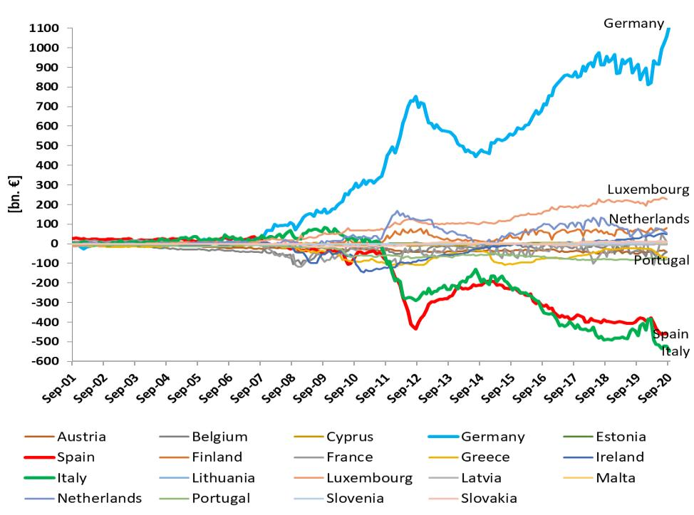

11 Central Banks
Central banks are outposts of private finance in the state.
Never ever say the words ‘central banks control the money supply’.
Central banking is more akin to sailing than driving. Whilst it might be tempting to imagine them steering the economy with a reliable accelerator and brake, they are far more at the mercy of the elements. They can tack and trim with a greater or lesser degree of skill, but in the end they can’t change the wind.
Central banking is about providing liquidity for solvent institutions, not about providing capital for insolvent ones. Thus, the capitalisation of asset management companies in any country should preferably be shouldered by the private sector, and if this is not possible, by the fiscal authority. Coeure (2015) ndependence and interdependence in a monetary union
Central banks today are powerless - They’re impotent. This is a shift of power that cannot be underestimated. Our whole economic s
ystem of the past 40 years was built on the assumption that the growth of credit and therefore
broad money in the economy was controlled through the level of interest rates – and that cent
ral banks controlled interest rates. But now, when governments take control of private credit
creation through the banking system by guaranteeing loans, central banks are pushed out of the
ir role. Napier (2022) We Will See the Return of Capital Investment on a Massive Scale
The heart of the matter is that the FOMC believes that the happy inflation numbers released this week are largely a statistical mirage; that markets have been fooled by randomness; that ultimately it will take a lot of monetary tightening to achieve price stability. The Fed’s vassals in Europe quickly came to the same conclusion — as if they had any choice in the matter. Policytensor (2022) Is the Fed Right or the Market?
Gabor
Central banks are outposts of private finance in the state. As outposts of shadow banking in the state, central banks can now discretionarily inject liquidity into private securities markets to arrest their fall in price, thus protecting (shadow) banks’ profits and access to secured financing. Arguably more important, central banks have instituted a discretionary regime for intervening in sovereign bond markets (qe, the ECB’s Outright M onetary Transactions, and market-maker-of-last-resort operations) that tacitly recognize s the fundamental role these markets play as safe havens for fragile finance.
By burying these measures in a sea of acronyms removed from public debate, central banks effectively protected the powerful position that financial capitalism has conferred on them through the discourse of central-bank independence.
Gabor (2018) Why Shadow Banking Is Bigger Than Ever
In managing our economy with disembedded measures of wealth, the world’s central bankers are effectively agents of the sustainability crisis. They may not wish to be unsustainable by personal inclination, but they certainly are by professional obligation because of how they are duty-bound to act. An entirely foreseeable response to the climate emergency is that people in wealthier countries may choose to pare back their consumption of non-essentials. Certainly, not everyone has the luxury to do this, but the obvious solution of “buying less stuff” has become an articulated idea in wealthy countries. “Flight shaming” and “consumption shaming” are new memes. Articles in multiple UK newspapers have challenged readers to see if they can go a year without buying any new clothes, contravening the media’s normal practice of generally trying to coax the economy along. (It buoys the advertising revenue). Such behaviours would amount to a direct hit on GDP in developed countries, where personal consumption can represent two-thirds of the total. Critically, any such reduction in consumption will likely show up as a deflationary decline in economic activity that the world’s central banks are on hair-trigger alert to prevent. The large and powerful financial bureaucracy stands ready to provide immediate stimulus to any perceived flagging of measured economic activity. Hence, the arrangement most populations in the world currently live under is that should they collectively choose to buy less, more money will be printed until they have changed their mind. Effectively, our exhausted ecosystem is gasping for a lull in measured economic activity that our financial authorities are pledged to never let happen.
Duncan Austin: Pigou and the dropped stitch of economics RWER95 (pdf)
11.1 Monetary Financing
Bateman Abstract
Monetary financing – the issuance of public money to support public expenditure – remains a widespread policy taboo. In this article, we analyze the operational practices of the Bank of England, the Federal Reserve and the European Central Bank (ECB) from the 20th onwards to argue that monetary finance should be understood as a conventional and legitimate part of central banks’ core functions. We argue that monetary financing serves a crucial macro-financial role in the face of large fluctuations in the demand for and supply of government debt, where the central bank acts to stabilize sovereign debt markets. We show that monetary financing has been a stable and pervasive feature of the Bank of England’s and the Federal Reserve’s operations. Turning to the ECB, we show that by the mid-2000s the view came to dominate the institution that the central bank should allow markets to punish governments for excessive deficits. This view informed the ECB’s catastrophic reluctance to act on the 2008 and 2009 Financial Crisis deficits. By 2020 that attitude had once again largely been abandoned.
Bateman Memo
A prominent taboo of modern economic policy is the creation of new money by a central bank to fund public expenditure: ‘monetary finance. Mature, stable and successful economies resolutely abstain from monetary finance, while irresponsible politicians and immature nations allow their central banks to monetize public spending. That is the logic which underpins the pro- hibitions on monetary financing which appear in IMF conditionality agreements, World Bank and OECD advice, legal prohibitions in European treaties, and developing countries’ constitutions. The same logic pervades the public statements of central bankers in advanced economies and monetary hegemons: explaining the dangers of monetary finance, and why their central banks would never dance with the economic devil.
The 2020 pandemic put that orthodoxy under heavy pressure. In World War I between 85% and 100% of war expenditures were paid for by issuing new money; this is what central banks should do now as well. Central banks dutifully launched enormous government bond purchase programmes, meanwhile explicitly renouncing any suggestion that these programmes constituted an act of debt monetization. Monetary financing, it seemed, had returned as a prominent tool of economic policy in all but name. What are we to make of these contradictory attitudes—often expressed by the very same individuals? Monetary finance should be understood as a conventional and legitimate part of a central bank’s core functions.
The predominant monetarist understanding that informs the taboo, its academic justification, and recent defenses of monetary finance, focus on macroeconomic impact: for better or worse, monetary finance is seen to increase public and private expenditure without raising taxes, thereby boosting aggregate demand. Complementing those macroeconomic accounts, we propose a macro-financial account of monetary financing, to which we ascribe an historically (largely) invariant, and under-explored, function: to navigate large fluctuations in the demand for and supply of government debt, thereby acting as a lender of last resort to governments facing ‘sovereign-financing-gaps’.
The ECB received its mandate during the heights of academic monetarism, but its legal basis explicitly permits secondary market ‘stabilization’ operations that can substantially reduce sovereign debt yields and treasury funding costs. As the supranational central bank matured in the 2000s, a more radical view emerged that reflected the monetary finance taboo: the ECB should allow markets to ‘punish’ governments for excessive deficits. That thinking drove the ECB’s refusal to provide the type of market-stabilizing monetary support that was conventional in the US and UK as member states faced record deficits in 2008 and 2009. Thus, the monetary finance taboo became a major driver of the Eurozone Crisis. By 2020, the ECB had explicitly disavowed its adherence to the monetary finance taboo and was openly acting as the lender of last resort to European governments.
Instead of studying monetary financing as a part of macroeconomic demand management, we emphasize its role in reallocating accounting liabilities across the government’s consolidated balance sheet, swapping money for debt. Accommodating large issuance of debt in this way serves the role of market making of last resort but also, typically first and foremost, lending of last resort to governments.
Bateman (2023) The dysfunctional taboo: monetary financing at the Bank of England, the Federal Reserve, and the European Central Bank (pdf)
11.2 Macroprudential
Macroprudential policies are financial policies aimed at ensuring the stability of the financial system as a whole to prevent substantial disruptions in credit and other vital financial services necessary for stable economic growth. The stability of the financial system is at greater risk when financial vulnerabilities are high, such as when institutions and investors have high leverage and are overly reliant on uninsured short-term funding, and interconnections are complex and opaque. High vulnerabilities increase the likelihood that a firm’s failure or other negative shock would cause distress at other financial institutions because of direct exposures and through fire sales, contagion, or other negative externalities arising from the initial shock. Macroprudential policies aim to reduce the financial system’s sensitivity to shocks by limiting the buildup of financial vulnerabilities.
One example of a macroprudential policy is the higher capital charge applied to Global Systemically Important Banks (G-SIBs), banks that pose more risk to the system. The G-SIB capital surcharge is based on five types of characteristics viewed to increase a bank’s systemic risk: size, complexity, interconnectedness, lack of substitutes, and cross-jurisdictional activity. Higher capital charges reduce the likelihood that a G-SIB would fail because they will have thicker capital cushions to absorb losses.
A recent paper looks at how the macro scenarios and assumptions about dividends and share repurchases in the stress tests work to reduce procyclicality of capital requirements.
Macroprudential tools can be structural or cyclical. Structural policies are implemented to build lender or borrower resilience to adverse events at any point in the business cycle. For example, the additional capital charges for G-SIBs are a structural tool. In other countries, limits on loan-to-value ratios (LTVs) or debt service–to–income ratios (DSTIs) for mortgage borrowers are examples of structural tools that have been applied to borrowers. These limits can be macroprudential when they are intended to not only protect an individual borrower from too much debt, but to protect home values in neighborhoods from falling sharply because many borrowers have trouble making their payments at the same time. The Hong Kong Monetary Authority, for example, sets the LTV ratios for borrowers based on the value of the property. Bank borrowers for properties with high values could get mortgages with LTV ratios ranging from 40 percent to 60 percent, while they could get mortgages with higher LTV ratios, up to 70 percent, for properties with low values.
Cyclical policies are aimed at increasing resilience in anticipation of an economic downturn to lessen the reduction in the supply of credit once the downturn materializes. The countercyclical capital buffer (CCyB) is an example of a cyclical policy. The CCyB works by requiring banks to increase their capital cushions during an economic expansion when systemic risks are rising, and then release them in an economic downturn to absorb losses. Reducing the capital constraint by releasing the buffer when the economy slows helps to insure against deleveraging, which if not counteracted could deepen the downturn by restricting credit.
Historically, macroprudential policies have been used more often in emerging market economies than in advanced economies. But since the global financial crisis, both advanced economies and emerging market economies have been using macroprudential measures more frequently.
11.3 Central Bank Independence
Haldane Memo
The widespread adoption of central bank independence was born out of the economic situation of the 1970s. The Great Inflation had seen high and persistent inflation across the world and economists turned their attention to the role that monetary policy played in this phenomenon. The time-consistency theory of Kydland and Prescott (1977), Nordhaus (1975) and Barro and Gordon (1983) provided an elegant answer to what might be going on. Governments had a natural tendency to over-inflate their economies, especially around election time, generating an “inflation bias”. To curb this inflation bias, some institutional means was needed to constrain government’s policy hand. Rogoff (1985) developed a model which provided such an institutional fix. Monetary policy decisions were to be delegated to a “conservative”, inflation-minded, central bank acting independently from government. In this way, central bank independence could prevent, at source, a return to the Great Inflation of the 1970s.
The macro-economic benefits, in theory, did not end there. Provided inflation expectations were well-anchored and central banks were not too inflation-averse – “inflation nutters” in the language of Mervyn King – monetary policy could be effective in stabilising output in the economy too. In other words, central bank independence was a potential twin-win, reducing inflation biases at no cost in increased output variability – a free lunch.
Empirical evidence followed to test these hypotheses. During the 1980s and 1990s, a number of papers established a statistically significant link between the level and variability of inflation and the degree of central bank independence across a range of countries. These cross-country correlations strongly suggested central independence was an important contributor to reduced inflation bias (Chart 3) and that it wasn’t associated with increased variability in output (Chart 4). The free lunch in theory was there in practice too. And this evidence, in turn, helped spur moves towards central bank independence in the latter-part of the 20th century.
Interestingly, a look at more recent time periods suggests these observed associations have vanished since the start of the 21st century (Charts 5-7). What explains this disappearing correlation? Some have used it to question whether the earlier link between independence and low inflation was no more than a statistical mirage. It could be argued that the fall in inflation over this earlier period was instead the result of the benign macro-economic environment of the Great Moderation. In other words, better inflation outcomes in the late 20th century might have reflected good luck rather than good central bank management.
The time-consistency problem familiar from monetary policy has a clear read-across to the world of financial stability. Governments have an incentive to run their financial systems, as well as their economies, hot in the interests of growth and electoral advantage. This generates a tendency to loosen regulation too far during credit booms, increasing the risk of future bouts of financial instability. In other words, there is a potential problem of “instability bias” in regulatory policies, to accompany the “inflation bias” in monetary policies.
In fact, I would argue this time-consistency problem is potentially greater in the financial stability sphere than for monetary policy, for two reasons. Credit cycles tend to be longer in duration, and larger in amplitude, than typical business cycles. This means wishful thinking and policy myopia (“this time is different”) are more likely to arise in credit booms than during typical business cycle upswings, exaggerating the time-consistency problem of financial stability policies. The costs of financial instabilities and crises also tend to larger than the costs of inflationary surges. This means the temptation to act in a time-inconsistent fashion – talking tough ex-ante, but acting weak ex-post – also tends to be greater. That can encourage risk-taking and amplify financial cycles and crises – a doom loop. The Global Financial Crisis, a long-duration credit boom that prompted massive government support ex-post, was a good example of these acute financial stability time-consistency problems in practice.
Given the practical success of independence, it is important to guard it for the future. And there are potential threats here. Central banks around the world have expanded their balance sheets massively over the past decade, and particularly over the past year. While this is not monetary financing, it has blurred the line between the monetary and fiscal realms and, among some people, raised questions of independence. The test will come if and when inflation begins to rise and central banks need to tighten policy to meet their mandate, independently of the prevailing fiscal stance. At that point, the strength and effectiveness of the legal and institutional frameworks surrounding independence will be crucial in ensuring we continue to benefit from the twin-wins that have been a feature of the last few decades.
11.3.1 Market Neutrality
The principle of market neutrality posits that corporate bonds purchased under the ECB’s €270bn corporate sector purchase programme should be made in a ‘neutral’ way: they should reflect the overall eligible market to ensure they do not distort the relative pricing of securities. Given the concentration of carbon-intensive industries in the corporate bond universe, this has resulted in a carbon-biased portfolio. This is problematic as it exposes the ECB to climate-related risks. And yet central bankers have so far been reluctant to question market neutrality for fear of losing their independence.
Klooster Abstract
Monetary policy operations in corporate security markets confront central banks with choices that are traditionally perceived to be the prerogative of governments. This article investigates how central bankers legitimise corporate security purchases through a comparative study of the European Central Bank (ECB) and the Swiss National Bank (SNB). As we show, central bankers downplay the novelty of corporate security purchases by relying on familiar pre-crisis justifications of Central Bank Independence. Citing an ideal of ‘market neutrality’, central banks present corporate security purchases as pursuing a narrow objective of price stability and obfuscate their distributive consequences. In this way, central bankers depoliticise corporate security purchases: they reduce the potential for choice, collective agency, and deliberation concerning both the pursuit of corporate security purchases and the choices made in implementing these policies. We also describe the undesirable democratic, social and environmental dimensions of these practices, which we propose to address through enhanced democratic accountability.
Klooster Memo
The past decades saw central banks acquire considerable independence from democratic institutions (McNamara 2002, Singleton 2010). Governments justified their decision to delegate monetary policy by relying on a narrow conception of monetary policy. This conception focuses on the setting of short term interest rates to achieve a long-term objective of stable price levels. A crucial element in the justification of central bank independence is the idea that monetary policy is an apolitical, technical area of policymaking (Marcussen 2009). The loss of democratic control that results from the creation of an independent central bank was also thought to be minimal, because distributive choices would remain with elected governments, who both decided on the central bank mandate and retained the use of fiscal instruments to achieve their distributive objectives. In this way, governments depoliticised monetary policy in the sense of reducing the potential for choice, collective agency, and deliberation around the use of monetary policy
The Global Financial Crisis (GFC) led central bankers to move far beyond the narrow task assigned to them under the traditional justification of Central Bank Independence (CBI) To rescue a global financial system on the brink of collapse, central bankers assumed new roles as lenders and market makers of last resort.
Central bankers, meanwhile, are openly concerned that the use of unconventional tools threatens their independence. When independent regulatory agencies extend their power, political authorities often seek to regain control. Central bankers, accordingly, try to counteract repoliticisation and these efforts shape their policies.
To investigate the simultaneously occurring processes of politicisation and depoliticisation we investigate how central bankers relate to the political dimensions of their new unconventional policies.
QE increases wealth inequalities.
Central bankers depoliticise their security purchases by subsuming them under the pre-crisis justification of CBI.
Central bankers present themselves as pursuing price stability, while in reality engaging in these purchases for reasons that are entirely unrelated to price stability.
‘Market Neutrality’
Rather than acknowledging and managing the market impact of their policies, central bankers pursue ‘market neutrality’, e.g. they seek to minimise the impact of their purchases on the relative prices of financial assets.
Central bankers keep decisions on new monetary instruments in the domain of their expert judgment, and thereby outside the domain of democratic politics.
As a consequence of their effort to make corporate security purchases market neutral, these programmes are insufficiently sensitive to environmental and societal concerns.
Depoliticisation of monetary policy: First, independent central banks treat monetary policy as having a narrow objective, which can be achieved with a clearly-defined toolbox and, second, central bankers treat distributive consequences as insignificant and sanctioned by the central bank’s mandate.
Klooster (2021) The Myth of Market Neutrality (pdf)
The new exogenous money is exogenous transition shocks in the climate change debate. Fortunately, Bank of England cannot hide behind that rock because of their new climate mandate.
Remember, Mark Carney’s ‘tragedy of the horizons’ speech identified two main risks of climate crisis: - physical risks (climate events) - transition risks - from green policies to accelerate transition to low-carbon
Now, central banks are confronted with an unpleasant conundrum that reveals the deeply political nature of their operations: greening monetary policy (collateral, unconventional bond purchases) means endogenous transition risks
So, in a have your cake and eat it moment, there is a growing tendency in central bank communities to pretend that all transition risks come from the fiscal side (carbon pricing)
It wouldn’t be surprising to find the exogenous transition shocks approach in the ECB’s monetary policy strategy review, despite (Lagarde?) and other’s recognition that central banks cannot longer hide behind the ‘market neutrality’ argument.
11.4 Financial Stability
11.4.1 Climate Risk
BIS Recommendations
This report provides an overview of conceptual issues related to climate-related financial risk measurement and methodologies, as well as practical implementation by banks and supervisors.
The report contains five key findings: First, climate-related financial risks have unique features, necessitating granular and forward-looking measurement methodologies.
Second, to date, measurement of climate-related financial risks by banks and supervisors has centred on mapping near-term transition risk drivers into counterparty and portfolio exposures.
Third, banks and supervisors have predominantly focused on assessing credit risk, as they advance in applying methods to translate climate-related exposures into categories of financial risk.
Fourth, while banks and supervisors remain at an early stage of translating climate-related risks into robustly quantifiable financial risk, work continues to gather pace
Fifth, key areas for future analytical exploration relate to measurement gaps in data and risk classification methods, as well as methodologies suitable for assessing long-term climate phenomena not always of a standard nature.
Institutional Dynamics
Baer Abstract
This article studies how institutional dynamics might affect the implementation of climate- related financial policies. First, we propose a three-dimensional framework to distinguish: i) motives for policy implementation (prudential or promotional); ii) policy instruments (informational, incentive or coercive); and iii) implementing authorities (political or delegated). Second, we use this framework to show how sustainable financial interventions in certain jurisdictions - most notably, Europe - rely solely on informational policies to achieve both promotional and prudential objectives. Policymakers in other jurisdictions - e.g., China - also implement incentive or coercive financial policies to achieve promotional objectives. Third, we identify two main institutional explanations for this European ‘promotional gap’: i) limited control of political authorities on financial dynamics; and ii) strong powers and independence of delegated authorities. This governance configuration leads to an institutional deadlock in which only measures fitting with both political and delegated authorities’ objectives can be implemented. Finally, we discuss the scenarios that might originate from the current institutional setting. We identify three possible evolutionary paths: i) a drift towards a green financial technocracy; ii) a re-politicization of delegated authorities; iii) a move towards fiscal-monetary coordination.
Baer Memo
In 2017, the EU Commissioner Valdis Dombrovskis expressed his support to the idea of introducing a ‘green supporting factor’ in bank capital requirements to incentivize lending to sustainable activities (Dombrovskis, 2017). The following year, the European Commission included the idea of ‘incorporating sustainability in prudential requirements’ in its sustainable finance action plan (EC, 2018). This position was generally greeted with skepticism by most central bankers and financial supervisors (see, among others: Dankert et al., 2018; Elderson, 2018; Rehn, 2018). It was emphasized that the aim of prudential rules is to mitigate financial risk, not to steer private credit in any particular direction. According to central bankers and financial supervisors, capital requirements should not discriminate between green and dirty financial assets, unless clear evidence of risk differentials is available.
This recent clash between public institutions raises deeper questions. For what purposes should banking and financial regulation be used? And who should decide what the admissible purposes are?
EU Banking regulation cannot be employed as a policy tool to actively reallocate private financial resources towards sustainable investments.
In several emerging economies banking and financial regulation is instead actively used to promote specific productive sectors. Financial risk is still monitored, but stronger weight is given to development (e.g., green) objectives.
The current status quo is unsustainable due to environmental constraints. At some point, someone will need to introduce stronger promotional policies to steer credit towards sustainable sectors. Given the distribution of responsibilities, missions, and powers crystallized within the current institutional framework, these promotional efforts should be led by the political authorities, leaving delegated authorities with a supporting role.
Baer (2021) Climate-related financial policies (pdf)
11.4.1.1 Climate Change Impact on Central Banks
Batten Abstract
This paper examines the channels via which climate change and policies to mitigate it could affect a central bank’s ability to meet its monetary and financial stability objectives. We argue that two types of risks are particularly relevant for central banks. First, a weather-related natural disaster could trigger financial and macroeconomic instability if it severely damages the balance sheets of households, corporates, banks, and insurers (physical risks). Second, a sudden, unexpected tightening of carbon emission policies could lead to a disorderly re-pricing of carbon-intensive assets and a negative supply shock (transition risks). Climate-related disclosure could facilitate an orderly transition to a low-carbon economy if it helps a wide range of investors better assess their financial risk exposures.
Batten Memo
Our analysis builds on Bank of England (2015) and Carney (2015) which have examined the impact of climate change on the insurance industry, but broadens the scope of the analysis. Specifically, our paper examines the impact of climate change and the changes in the composition of energy supply associated with the transition to a low-carbon economy on the financial system and the macroeconomy, and thus goes beyond the analysis of the European Systemic Risk Board (2016) that considered the potential impact of the transition to a low-carbon economy on financial stability. While climate change is expected to have more adverse macroeconomic impacts on some developing countries, the focus of this paper is mainly on the impact of climate change from the perspective of central banks in advanced economies.
Without CCS, 35% of known global oil, 52% of gas and 88% of coal reserves will be ‘unburnable’ before 2050 in order to achieve the 2oC target.
The carbon price (which could take a form of a carbon tax or determined via a carbon emission trading scheme) would need to be about €35-60/tCO 2 for CCS coal-fired power plants to compete against coal-fired plants with unabated emissions, and €90-105/tCO 2 for CCS-gas fired plants to compete against gas-fired plants with unabated emissions.
Financial sector activities can influence physical risks through a number of channels. First, the decision of financial institutions to fund activities that are intensive in CO 2 emissions can contribute to increasing the climate-related physical risks, albeit indirectly; and conversely, their financing of technologies that help reduce CO 2 emissions can contribute to a reduction of climate-related physical risks. This is a problem of externalities, as the financial institutions that fund these activities do not necessarily suffer the losses and gains resulting from changes in climate-related physical risks, most of which may occur in the future, and hence may not internalise these losses and gains when making the funding decisions. The standard ways of addressing such externalities include appropriate use of taxes and subsidies, and legislation that directly targets the specific externalities.
By contrast, prudential regulations are fairly blunt instruments for dealing with climate-related externalities. For example, capital requirements for banks and insurers are designed to mitigate prudential risks, and hence adapting these to reflect externalities could undermine their primary purpose, or could give rise to undesirable effects. On the one hand, relaxing regulations just to encourage particular types of lending, for example by reducing risk weights that are used in calculating the regulatory capital ratios below their prudentially sound levels, could jeopardise the safety and soundness of financial institutions. 12 On the other hand, tightening regulations on financial exposures to carbon-intensive firms could also have the unintended effect of increasing the cost of finance for those borrowers, thus reducing their ability to invest in emission-reducing technologies (e.g. CCS and renewables), unless exclusions can be applied to financing specifically earmarked for such investments. Thus, targeted policy measures are more likely to be effective in achieving climate-related objectives than adapting prudential regulations.
both the size of the financial losses arising from the occurrence of a given hazard and the allocation of those losses are influenced by the ex ante decisions of the financial sector. For example, the amount of insurance and credit available for financing the construction of buildings in flood-prone areas will determine the size of the eventual financial losses arising from the materialisation of such risks, as well as the allocation of these losses. The market outcome can be expected to be efficient as long as all contracting parties are fully aware of the risks and can price them efficiently, but various market imperfections could result in mispricing of risks. For example, the price of insurance could be driven up if asymmetric information leads to adverse selection problems, in which only those parties that are inherently higher risk than average choose to buy insurance. 13 Moreover, uncertainty about the wider repercussions of extreme weather events implies that certain risks – such as the likelihood that they trigger riots that could cause further damage – are inherently hard to model.
The materialisation of climate-related physical risks – e.g. via natural disasters that are influenced by climate change – can potentially result in large financial losses, some of which are borne by insurers while others are uninsured.
Batten Conclusion
This paper has examined the impact of climate change on the monetary policy and financial stability objectives of central banks. We have identified four main ways in which climate change and policies on carbon emissions could affect central banks’ objectives. First, a weather-related natural disaster could trigger financial instability and a macroeconomic downturn if it causes severe damage to the balance sheets of households, corporates, banks and insurers (physical risks). The economic impact of a given natural disaster is likely to be less severe if the relevant risks are priced in financial contracts ex ante, and the financial system has distributed them efficiently, e.g. via insurance and reinsurance. Ex post, a central bank will need to react appropriately to a disaster to meet its monetary and financial stability objectives by gauging the impact on the output gap, inflationary pressure and the financial system – for example, by adjusting monetary policy and supplying liquidity to the financial system if needed. Second, gradual warming could also affect an economy’s potential growth rate. However, more reliable quantitative estimates based on detailed sector-level impact analysis would be needed before central banks can incorporate this effect in their monetary policy analysis. Third, a sudden, unexpected tightening of carbon emission policies could lead to a disorderly re- pricing of carbon-intensive assets and generate a negative supply shock (transition risks). This has a potential for generating significant balance sheet losses and financial instability. An orderly transition to a low-carbon economy is possible, and is likely to be facilitated by transparent and predictable policies on carbon emissions that encourage an early re-direction of private investment towards low-carbon technologies. Climate-related disclosure by industries could encourage this re-direction if it enables a wide range of investors to better assess their financial risk exposures. Such disclosure is likely to be more effective if it is both forward- looking and simple to understand – for example, how a given change in carbon price will affect the value of the firm. Such disclosure could potentially also help inform the central banks’ assessment of financial stability risks arising from the transition to a low-carbon economy, for example via a stress test. Finally, both the changes in weather patterns and the increased reliance on bioenergy could increase the volatility of food and energy prices, and hence the volatility of headline inflation rates. This could make it more challenging for central banks to gauge underlying inflationary pressures and maintain inflation close to the target.
11.4.1.2 Sustainable Regulation
WWF today launches a new framework – Sustainable Financial Regulations and Central Bank Activities (SUSREG) – to support central banks, financial regulators and supervisors in enhancing the financial sector’s stability and resilience to climate-related and broader environmental and social risks, while enabling the mobilisation of capital for the transition to a low-carbon, resilient and sustainable economy.
Developed as part of WWF’s Greening Financial Regulation Initiative, the SUSREG framework will be used to assess the extent to which climate-related, environmental and social issues are being integrated in key aspects of financial regulations, supervisory expectations and monetary policy in 40 countries, covering most members and observers of the Basel Committee on Banking Supervision (BCBS).
11.5 FED’s Dollar Empire
The return the Federal Reserve makes on its portfolio managing the dollar empire. In 2015, the Fed remitted $97 billion in profits to the US Treasury; compare that to the $88 billion made by the most profitable company in the world, Saudi Aramco.
That money is treated like tax money—the Treasury reduces the federal debt by that amount. The Treasury reduces the federal debt by that amount, diminishing the quantity of safe assets in the world.
Refined Insights
Whatever anyone thinks of the yuan or BRICS et cetera, it’s clear that the dollar is in for tough times ahead. The Fed is caught between Scylla and Charybdis.
A strong dollar, boosted by higher interest rates, is beneficial to the middle class and the poor who retain substantial amounts of their capital in cash. A strong dollar also, of course, makes imports cheaper. Of course, the most important benefit is it helps counter inflation.
But the era of zero interest rates went on for too long( the pandemic clearly didn’t help matters). It meant that regional banks all over the country were sitting on massive piles of unrealized losses. Tech, the industry which benefits most from zero interest rates, was given a full decade of it. What did they do with it? Well, the honest truth is other than Elon Musk( who I have to concede built actual useful stuff), hardly anything that matters.
Captured by venture capitalists, The tech industry has spent all of that time and resources promoting the gig economy to disrupt traditional labour, crypto in the absurd hope that institutional gambling and Ponzi schemes constituted some kind of financial alternative, and the metaverse to do precisely what exactly?
They have squandered a golden opportunity to actually build the next era of technology on American shores ( perhaps LLMs make a difference: the jury is still out there).
The decision to freeze Russia’s reserves, go after Oligarchs’ assets regardless of due process, and weaponize the financial system will come in time to be remembered as one of the greatest geopolitical own goals of all time. It means that the elite all over the world are more reluctant now to purchase western assets which of course drives dollar demand down, it means China can and is entrenching itself in the middle east and I can’t draw out all of the massive implications there, and it means America has unwittingly made itself the midwife of an alternative financial system, albeit one with very different goals and strengths.
So, the Fed can’t afford to keep raising interest rates: it will break several of American industries( banking and tech most clearly). It can’t afford to not keep raising interest rates ( if inflation is not countered properly, the consequences for the median American are steep)
As it is, Biden by endorsing the right decision to make depositors whole( ironic that ‘independent risk taking libertarians’ panicked and clamoured for federal intervention so easily), may have damaged his own chances of reelection. The collateral damage of this decision will be vast. But, in keeping with the grand old rules of capitalism, the venture capitalists will escape much of it.
Refined Insights (2023) Comment to Noah Smith on FED’s SVB actions
11.6 ECB
Morgan
The central bank (the ECB and the national central banks or NCBs) have in general undertaken actions that have supported commercial banks, while doing less to ensure sufficient lending occurs and productive investment is financed, to support recovery and growth.
A great deal of institution building has helped to produce rather than solve problems and policy has been poorly targeted, insufficient in scale relative to the problems addressed and has often been withdrawn too soon. The result has been comparatively high unemployment, deflation (until recently) in terms of price stability targeting at 2%, and slow growth (cumulatively leading to an issue of “secular stagnation”, and without, rhetoric notwithstanding, properly addressing the need for massive climate response transitions).

Fig: TARGET2 Imbalances
There is no set maturity or settlement deadline for the intra-Euro system claims; in fact, the TARGET2 liabilities are honoured by making interest payments. The payments are collected and redistributed by ECB to the central banks with positive TARGET2 balances. This is an important aspect as it means that a creditor country cannot force a debtor country to pay back, and the creditor will have to live on an interest rate which could be zero or even negative in real terms.
Analysts suggest there has been, amongst other things, a “passive monetisation” behind the scenes (the ECB has effectively financed deficits in the face of capital flight etc.). TARGET2 then, is a symptom of some problems and a cause of others.
11.7 EU Macroprudential
Stellinga Abstract
The 2007–09 financial crisis appeared to demonstrate the need for a strong, supranational EU macro‐prudential policy framework to prevent similar future disasters. The implemented framework, however, is neither. It is highly complex, involving many constraints on the use of macro‐prudential instruments. It is also one of the principal areas of national discretion in EU banking regulation. To explain this, I build on the ‘financial trilemma’ thesis which holds that there are inherent tensions between pursuing financial stability, financial integration and national financial policies. Supranationalizing macro‐prudential policy proved difficult due to a lack of consensus on how to measure systemic risks and because of the distributional consequences involved. This increased the tension between stability and integration, as national macro‐prudential policies could constrain cross‐border finance and they could be misused for competitiveness considerations. Key policy actors disagreed on which goals to prioritize, with bargaining leading to a convoluted policy framework.
Stellinga Memo
MPP targets systemic risks by enabling supervisors to tighten requirements during booms, to loosen them when risks recede, and to impose tougher rules on systemically important financial institutions.
Given the devastating consequences of the crisis and EU policy‐makers’ embrace of macro‐prudential ideas, a strong MPP framework seemed a likely post‐crisis outcome. Especially in light of the EU’s push for regulatory harmonization – both the single rulebook and the shift (in the Eurozone) towards supranational supervision by the European Central Bank (ECB) reduced national discretion in micro‐prudential regulation – we would have expected a harmonized framework to emerge for macro‐prudential policy.
The implemented framework did not meet these expectations. Although supervisors gained new macro‐prudential instruments, their use has been constrained by procedural requirements and limits to their stringency and scope, with macro‐prudential instruments focusing on capital requirements and leaving other segments of banking regulation and the non‐banking sector largely untouched.
Systemic risk is an elusive concept with an important national dimension, rendering a one‐size‐fits‐all approach counterproductive.
The MPP framework that developed between 2009 and 13 was the result of key actors’ inability to agree on how to balance national discretion, stability and integration.
With no consensus on how to measure systemic risks, supranational macro‐prudential norms implied a one‐size‐fits‐none approach. As systemic risks change over time, relying on a fixed set of indicators could well mean preparing for yesterday’s war.
11.8 Finance Influence
Braun Abstract
The pre-crisis rise and post-crisis resilience of European repo and securitization markets represent political victories for the interests of large banks. To explain when and how finance wins, the literature emphasizes lobbying capacity (instrumental power) and the financial sector’s central position in the economy (structural power). Increasingly, however, finance also enjoys infrastructural power, which stems from entanglements between specific financial markets and public-sector actors, such as treasuries and central banks, which govern by transacting in those markets. To demonstrate the analytical value of this perspective, the article traces how the European Central Bank (ECB), motivated by monetary policy considerations, has shaped post-crisis financial policymaking in the EU. It shows that the ECB has played a key part in fending off a financial transaction tax on repos and in shoring up and rebuilding the securitization market. With market-based forms of state agency on the rise, infrastructural entanglement and power shed new light on the politics of finance.
Braun Memo
Following the global financial crisis, the European Commission proposed taxing repos and reining in securitization, in an effort to tackle the two financial markets at the heart of European shadow banking. Several years and policy battles later, repos are exempt from a defanged financial transaction tax proposal, while reviving securitization is a top EU policy priority. Why did financial-sector interests prevail? Proposing a new theoretical approach to the politics of finance, this article focuses on the power relations at the hybrid intersection of private banking and public central banking.
Much has been written about the politics leading up to and protecting central bank independence, which both stems from and entrenches unequal power between capital and labour in a low-salience, technocratic policy area. In contrast, the literature has less to say about how, once central bank independence is established, power operates at the intersection of public monetary authority and private financial markets.
The marketization of financial intermediation is a key aspect of financialization. The rise of what has variously been labelled ‘shadow banking’, ‘securitized banking’ or ‘market-based banking’ has been a boon to the financial sector. Fee-based income, regulatory arbitrage, bigger balance sheets and higher leverage ratios have boosted profits and remuneration. Despite being seen as the chief culprit of the global financial crisis, market- based banking has shown remarkable resilience since 2008. In Europe, following a brief period of stigmatization, it is at the heart of ‘Capital Markets Union’, the European Commission’s attempt to build a more market-based financial system. This surprising outcome indicates substantial political support for financial-sector interests.
The political economy literature emphasizes two forms of political power wielded by the financial sector: instrumental power, exercised through lobbying, and structural power, which derives from the financial sector’s privileged position in financialized economies.
This literature has yielded important results, but its treatment of the state and of finance as two separate spheres, and of state agency as purely regulatory, is problematic. It is at odds with the crucial insight of a discipline-spanning body of research that maintains that, at the centre of the financial system, state and market actors form a hybrid public–private partnership, or a franchise system.
Whereas the regulatory view conceptualizes state–finance interactions as ‘regulation and governance through rule making and rule enforcement’, this article, drawing on the hybridity view, maintains that state agency is often market-based—state actors appear not just as regulators of but also as participants in financial markets.
This article advances a simple theoretical argument: when state actors transact in finan- cial markets for governance purposes they create infrastructural entanglements, which con- stitute a distinct source of financial-sector power. In the case at hand, repo and securitization markets—the two main pillars of market-based banking—provide the infra- structure through which the European Central Bank (ECB) implements its monetary policy. This entanglement makes central bankers, who seek to maximize their economic steering capacity, dependent on bankers, giving the latter infrastructural power. This has distributional consequences: financial institutions benefit from their infrastructural role in the monetary system, including through interest payments on central bank reserves—which come at a fiscal cost to taxpayers — and through preferential treatment in the political process.
The political power that accrues to private financial actors as a result of state actors seeking to govern through financial markets.
Explaining the ECB’s support for repo and securitization markets by the central bank’s dependence on these financial infrastructures, the article adds an important piece to the puzzle of how finance wins, while at the same time highlighting policymaking as a facet of central banking that, at a time of heightened concerns about central bank independence and legitimacy.
The political economy literature has shed light on the delegation of power to cen- tral bank technocrats, but has failed to elucidate the politics of how, once empowered, central bankers act on the economy.
This became particularly problematic when, in the context of financial liberalization in the 1980s, central bank agency became more market-based. Specifically, central banks shifted from ‘direct’ to ‘indirect’ monetary policy instruments— the triad of reserve requirements, standing facilities and open market operations. As part of the latter, central banks, including the ECB, adopted financial practices from the private sector, notably mark-to-market techniques, margin calls and hair- cuts. The ECB took the marketization of monetary policy to new heights when, in 2005, it outsourced the decision over the collateral eligibility of euro-area sovereign bonds to private credit rating agencies.
ECB is different from other EU gov- ernance bodies. It is not only a central bank that holds and exerts administrative authority— ‘setting, interpreting and applying statutory rules’—but also a central bank that trades in financial claims with other, private-sector banks.
The central bank’s control over macroeconomic conditions depends on financial transactions into which private actors enter at their own discretion, creating infrastructural entanglements with those financial markets that serve as the conduits for monetary policy.
Traditionally, European banks have engaged in relationship-based lending financed by customer deposits. While banks continue to play a central role in European credit intermediation, the hallmark of the new business model has been the marketization of both sides of banks’ balance sheets. On the asset side, banks securitize loans into asset-backed securities that are sold to investors. On the liability side, banks complement deposit financing by borrowing in the secured money market, where securities (including securitized loans) serve as collateral. This business model of market-based banking is part of the broader shadow banking system that includes non-bank financial institutions, such as money market mutual funds and asset managers.
From a political economy perspective, market-based banking, and shadow banking more broadly, matter for three main reasons: systemic risk, corporate finance and inequality. The 2008 systemic financial crisis was caused by losses on securitized loans on the asset side and a freeze of short-term money market funding on the liability side of banks’ balance sheets The buffer function associated with relationship-based banking is diminished with market-based banking, under which borrowing conditions for firms and households depend much more directly on developments in global capital markets. The marketization of financial intermediation has been a key contributor to the growth in inequality in OECD countries.
The financial sector’s high levels of unity and organization often bring favourable political outcomes.
The dependence of the state on private and the resulting structural power of business in general, and of finance in particular. The distinguishing feature of structural power is that it achieves political forbearance without the need for business to organise and act in concert.
The central bank and the treasury—routinely enter transactions with private-sector counterparties, buying and selling financial claims for public policy purposes. This leads to the main theoretical argument of the present article: those parts of the financial system that serve as conduits for such market-based economic governance enjoy infrastructural power. Closely related to structural power in that it rests on the financial sector’s centrality for economic performance, infrastructural power nevertheless constitutes a distinct sub-type derived from direct entanglement at the level of policy instruments rather than the indirect dependence at the level of ultimate policy goals.
According to the structural power approach policymakers placate business interests for fear that not doing so would harm economic growth. In contrast, infrastructural power operates via policymakers’ expectation that harming particular markets would blunt their own policy instruments and thus diminish their control over the economy.
The European Commission and the ECB may be working towards complementary and compatible goals, but they do so by different methods: the Commission governs by issuing directives and regulations, the ECB by issuing liabilities and purchasing securities.
The ECB’s support for repo and securitization markets is underpinned by a rational expectations-based macroeconomic paradigm that implies a positive net effect of deep and liquid financial markets on economic performance and governability.
Central bankers protect finance in order to bolster their own institutional position and independence.
Repo
While there was still considerable instrument diversity in the 1990s, by 1997 most EMU central banks had converged on reverse repurchase transactions as their primary reserve- providing instrument, thus paving the way for them to become the standard instrument for all open market operations of the Eurosystem (that is, the ECB and the national central banks). A sale and repurchase agreement, or repo, consists of an exchange of cash for securities between two parties. The cash borrower (‘repo seller’) agrees to repurchase the securities from the cash lender (‘repo buyer’) at a specified date in the future. Interest is paid by the cash borrower in the form of a mark-up on the repurchase price, the repo rate. Repo markets are at the heart of the global shadow banking system. In addition to the interbank segment, repo markets also connect banks in search of short-term funding and non-bank institutions seeking safe and liquid, money-like assets. Following the crisis, repo markets came under scrutiny for their effects on pro-cyclicality and leverage in the banking system, as well as on the bank–sovereign nexus. There are currently $12 trillion of repo and reverse repo transactions outstanding globally, of which about $9 trillion are collateralized by government bonds. At $2.8 trillion, the euro-area repo market is the world’s largest.
In the late 1990s, several high-level repo market studies identified the transnational integration of the European collateralized interbank market as a crucial prerequisite for the single monetary policy. Most importantly, the Giovannini Group, which reported to the European Commission, bemoaned the fact that Europe still had ‘essentially 15 separate repo markets’ and argued that a ‘truly unified repo market’ would facilitate central bank control over interbank rates. A study commissioned by DG Economic and Financial Affairs also emphasized that it would be ‘in the interest of the central bank to have an efficient repo market’, which would enable ‘interest rate changes [to] feed through to the real economy more quickly and more evenly’.
FTT
Starting in 2010, the Commission, then supported by the largest Member States, advo- cated taxing repos on the grounds that the market contributed to excessive and pro-cyclical leverage and thus to financial instability. The ECB, in contrast, opposed the financial trans- action tax on the grounds that a tax on repos would harm the market that served as the con- duit for the implementation and transmission of its open market operations. The rift between the two agencies was thus not based on a fundamental divergence on policy goals, but on the dependence of the ECB’s market-based policy instruments on a deep and liquid repo market.
Securitization
Prior to the US subprime crisis, central bankers and regulators praised securitization as a tool for risk diversification. In contrast, after the crisis securi- tization was seen as riddled with asymmetric information and moral hazard problems, and was linked to excessive lending, fraudulent mis-selling and financial instability. Regardless of the normative assessment, securitization reorganizes risks and incentives in ways that represent ‘a fundamental shift in how finance is done’.
The infrastructural entanglement between the ECB and the securitization market is rooted in the ECB’s decision to integrate ABSs into its collateral-eligibility framework. More recently, in the wake of the failure of Lehman Brothers, the ECB assumed the role of ‘dealer of last resort’ for ABSs. By taking suddenly- illiquid ABSs onto its balance sheet, the ECB gained leverage over the securitization market, while at the same time becoming more dependent on it. This infrastructural entanglement led the ECB to support securitization at a time when this asset class was still shunned by investors and politicians alike, thus paving the way for its subsequent resuscitation.
Collateral, quantitative and regulatory easing—no other public agency has done more for the European securitization market than the ECB. To see why instrumental power cannot explain this steadfast support, timing is, again, crucial. The ECB cast securitization as part of the solution at a time when other European and national policymakers still regarded it as part of the problem.
The divergence between the ECB and the Commission is difficult to square with the structural power approach, which lacks a theoret- ical rationale for why different parts of the EU governance apparatus should hold such different views of the effects of a more tightly regulated securitization market on the shared policy goals of financial stability and economic growth. In contrast, the market-based nature of central bank agency, and the resulting infrastructural entanglement at the level of policy instruments, explain why the interests of the ECB were uniquely aligned with those of the securitization sector.
The theoretical argument transcends the case of the ECB: In areas such as monetary policy, debt management or public banking, policy instruments are market-based, and governmental actors seeking to ‘govern through financial markets’ have a vested interest in shoring up and stabilising the relevant market/ governance infrastructures.
Conclusion
One of the central questions for political economists in recent years has been why and how finance tends to win. The post-crisis resilience of market-based banking in the euro area repre- sents a significant victory for the financial sector because repo and securitization markets boost profits via higher leverage and income from fees. To explain that victory, this article adapted the concept of infrastructural power for studying the politics of finance. It showed that, in the two cases under consideration, the political power of repo and securitization mar- ket actors derives from their infrastructural entanglement with the ECB. Infrastructural power constitutes a sub-type of structural power that focuses on differences in governance methods, namely between administrative governance and market-based governance. Whereas structural power operates via policymakers’ expectation that harming business will harm economic per- formance, infrastructural power operates via policymakers’ expectation that curtailing mar- kets will curtail the effectiveness of their own, market-based policy instruments.
ECB as a de facto financial policymaker; a role that is not, except in supervisory matters, part of its legal mandate. The ECB has helped establish, expand, pro- tect and revive repo and securitization markets, which serve as infrastructure for the imple- mentation and transmission of monetary policy. The preference for deep and liquid financial markets, shared by bankers (guided by profits) and central bankers (guided by monetary governability), prevailed.
The notion of harnessing capital markets for public policy goals has also been at the heart of Capital Markets Union, which deploys a broad set of measures to engineer a more-market- based financial system. Deprived of fiscal and other macroeconomic policy instruments, the European Commission, supported by the ECB and by public development banks, sees Capital Markets Union as a means to harness private financial markets in order to achieve macroeconomic goals.
The infrastructural power approach predicts that, under conditions of infrastructural entanglement, the interests of state actors in search of market-based economic steering capacity will tend to align with the interests of financial-sector counterparties, thus boosting the latter’s political power.
This article calls for caution. Other things being equal, greater reli- ance on market-based forms of state agency tends to strengthen the infrastructural power of finance. Working ‘through financial markets’ may limit the ability of public authorities ‘to help Main Street, not Wall Street’.
Braun (2021) Central banking and the infrastructural power of finance (pdf)
11.9 Unconventional Central Banking
Mushtaq Abstract
The 2008 financial crisis saw central banks introduce a variety of tools to shore up the financial system, including unconventional measures that made use of central bank balance sheets to directly shape markets. This paper argues that central banks increasingly rely on unconventional tools in noncrisis times to maintain confidence in an unstable financial system: in rich countries, outright asset purchase programs form the core of monetary policy, and in emerging capitalist economies, the sale and purchase of foreign exchange assets constitute the central mechanism of exchange rate policy. These interventions increasingly target ‘market dysfunction,’ as opposed to (a narrow interpretation of) monetary policy or the level of the exchange rate, suggesting a convergence in central bank operations around maintaining the plumbing of finance. Using two case studies – foreign exchange operations by the Reserve Bank of India and asset purchase programs by the U.S. Federal Reserve – the paper demonstrates a blurring of the boundaries between crisis and noncrisis interventions, and lends evidence to the concept of a de-risking state that guarantees liquidity. The paper concludes with a discussion of how a de-risking state exacerbates inequality, financial vulnerabilities and undermines meaningful action on pressing issues such as climate change.
Mushtaq (2021) Unconventional central banking and the politics of liquidity (paywall)